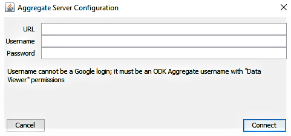
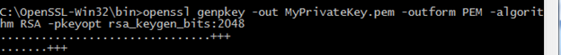

What do you need help with?
Search the knowledge base, browse our resources and visit our forum for more detail information
Search the knowledge base, browse our resources and visit our forum for more detail information
This procedure is quite technical and is intended for users who are comfortable with advanced technical instructions and requires strict attention to detail.
Encrypted forms work by encrypting the data on the phone the moment it is saved. Data sent to KoBoToolbox is encrypted and completely inaccessible to anyone not possessing the private key. In this case, KoBoToolbox serves simply as a storage locker for your encrypted files - a place to upload and then download for later for local decryption (using ODK Briefcase). Since the form submissions are encrypted, it means, however, anything that requires access to the data like the map view or data export won’t work within KoBoToolbox. The extra level of security makes using KoBoToolbox in a way to collect sensitive data while meeting certain data protection protocols possible.
KoBoCollect supports the ability to encrypt the content of a form the moment it is marked as completed and ready for submission on the phone. To take advantage of this requires the use of a public encryption key which you include in the XLSForm and a private key (which you never share) that is used by ODK Briefcase to decrypt the data locally after you’ve downloaded it from KoBoToolbox. The public key is used to encrypt data while the private key decrypts it. Only a person who has the private key, can decrypt the data encrypted with the public key. To understand more about public and private key infrastructure see here.
Create your form in KoBoToolbox as always. Download the form from the drafts list as an XLS file.
In the downloaded file go to the ‘settings’ sheet.
Add a column submission_url and type https://kc.kobotoolbox.org/yourusername/submission or https://kc.humanitarianresponse.info/yourusername/submission (depending upon the server you are using). Please note that yourusername is your KoBoToolbox user account.
Add another column public_key (i.e. base64RsaPublicKey). Paste your compatible public key.
(Please see image below for reference)

Upload the XLS file back to KoBoToolbox. You can either import it back to the Form Drafts list and then deploy it as a new survey project, or import it directly to your deployed Projects list. Once deployed you should see a label with the text “encrypted” next to your form name.
ODK Briefcase is used to download the encrypted files from KoBoToolbox and decrypt them locally on your computer using a private key ensuring single access to the data. For decryption to be successful with ODK Briefcase make sure you download and install the Java Cryptography Extension (JCE) Unlimited Strength Jurisdiction Policy Files 6 from the Java download site. This is required for decryption to be successful.
Unzip the downloaded zip archive
Navigate into the extracted directory tree and copy the local_policy.jar and US_export_policy.jarfiles to the lib\security directory
Paste these files inside the installation directory of the Java Runtime Enviornment (JRE) of your computer, replacing earlier versions of these files.
On Windows, the JRE is usually installed here: C:\Program Files\Java\jre7\lib\securityOn OSX the location is /Library/Internet Plug-Ins/JavaAppletPlugin.plugin/Contents/Home/lib/security
On OSX the location is /Library/Internet Plug-Ins/JavaAppletPlugin.plugin/Contents/Home/lib/security
Download and open ODK Briefcase.
Specify a Storage Location under the Settings tab.
Open the Pull tab and click Configure.
Then enter the following:
https://kc.kobotoolbox.org/yourusername OR https://kc.humanitarianresponse.info/yourusername(depending on which server you use)
Your username
Your password
Press Connect when done

A list of projects is displayed. Select a project that you wish to pull and press Pull. You will receive a message Success under the Pull Status.
Now go to Export tab.
Press the Edit Default Configuration to ensure that you have the PEM private key at the PEM file location.
If it’s not there, select the PEM private key from the folder you had secured safely. (Note: You will also see all the projects here that has been successfully pulled.)
Now check the project that you would wish to export and press Export.
Data is exported as a CSV file, you can now view the unencrypted data.
To generate the RSA public-private key pairs you can use the OpenSSL software package, which is pre-installed on OSX and Linux. On Windows you have to download and install the OpenSSL software package from this site. (Note: install the Win64 OpenSSL v1.1.1c in C: rather than the default location C:\Program Files)
Note: We strongly recommend using OpenSSL as documented below for creating your public/private key pair as other methods may not be supported by the software.
Open a Windows ‘cmd’ window.
Type the following command: cd C:\OpenSSL-Win32\bin to change to the /bin directory in the OpenSSL directory.
Create a 2048-bit private key and write it to the MyPrivateKey.pem file by typing the following command, then press Enter: openssl genpkey -out MyPrivateKey.pem -outform PEM -algorithm RSA -pkeyopt rsa_keygen_bits:2048

Then, extract the public key for the above private key. Type the following command then press Enter: openssl rsa -in MyPrivateKey.pem -inform PEM -out MyPublicKey.pem -outform PEM -pubout

You have now generated two files that is:
MyPrivateKey.pem - your private key that you need to move to a secure location.
MyPublicKey.pem - your public key, that you can share with anyone you want to share information securely
Open the MyPublicKey.pem with Notepad or another text edit, your public key is the uninterrupted very long string of characters,
e.g.:Tjhfur1K9+BRQ2USezIPbtyahbfuNqviI5Suhm8maA3JoELRHj9psjf/oNWoG87aFtKNbLrRaCEDP oFMDC9NEzWlv5L49BygeieMu/wg/rtMT0M0kgDbKxw5weJJgyb9P41aMsrqAAAAB3NzaC1yc2EAAAADAQAB AAABAQDfNoFX7bh3bfdW6lGfDht1Ea8PUBLKYjugbHN5jS7j5fHV6dexM+kzvITVgoyjhhKPXeCbaT62vD/ saTqJFXJzlysnZ24fqxNkjreO5K5EQ9c3ggwqML06+AKrFUSP5jpnyJJH8btNwKl6D5pG4ZseHwDUKzZtae xtPTNQz67kdYIKdtCkCsQHVsy4xvy/A0jzfK3xyOkG6j+L
This string is what you will need to paste under the public_key field in your settings sheet on your XLS file.
IMPORTANT: make sure that you paste only the public key string and no blank spaces or line breaks!
MyPrivateKey.pem is the file you will use when exporting the submissions using ODK Briefcase.
Note: When trying to edit a form that has been encrypted, you receive a message “This form cannot be edited once it has been marked as finalized. It may by encrypted”.